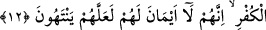

olanlar onlar için de geçerlidir. Onlara kardeş muâmelesi yapın. Bu üç haslet (tevbe,
namaz ve zekat) olmadan dinde kardeşlik meydana gelmediği gibi canı ve malı da
koruma altına alınmaz.
“Biz,” âyetlerimizin içerdiği hükümleri “bilen” onların üzerinde tefekkür eden ve
gereğiyle amel eden “bir kavme” ahidlerini bozan müşriklerin ve diğerlerinin
halleriyle alakalı hususlar ile onların küfür ve îman etme durumları hakkındaki
hükümlere dâir “ayetlerimizi böyle açıklıyoruz.”
12. Eğer antlaşmalarından sonra yeminlerinizi bozarlar ve dininize saldırırlarsa,
küfrün önderlerine karşı savaşın. Çünkü onlar yeminleri olmayan adamlardır.
Umulur ki küfre son verirler.
“Eğer” tevbe etmez, üzerinde ittifak edilen “andlaşmalarından sonra yeminlerini”
yerine getirmez, aksine “bozarlar” içlerinde gizledikleri kötü düşüncelerini açığa
vurur, onu kuvveden fiile çıkarırlar “ve dininize saldırırlarsa,” dininiz hakkında ileri
geri laf eder, ayıplar, açıkça yalanlayıp hükümlerini kötülerlerse “küfrün önderlerine
karşı savaşın.”
Burada “onlarla” şeklinde zamir getirmek mümkün iken “küfrün önderleri” diye
onların açıkça zikredilmesi onlarla savaşma zorunluluğunun sebebine işaret içindir.
Demek istenmiştir ki onlar bu hareketleriyle küfrün önderleri olmuşlardır ve ölümü
haketmişlerdir. “Küfrün önderleri” ile Ebû Süfyan, Hars b. Hişam, Ebû Cehil b. Hişam,
Sehl b. Amr, İkrime b. Ebî Cehil ve benzerleri gibi müşriklerin önderlerinin ve
elebaşlarının kastedildiği de söylenmiştir.
Küfrün önderlerinin özellikle zikredilmesi, diğerlerini hüküm dışı bırakmak için
değildir. Onların öldürülmeleri daha önemli olduğu içindir. Çünkü onlar şerde aşırı
giden ve kendilerine uyanları bu kötü davranışlarına çağıran öncülerdir. Sanki
buyurulmuş oluyor ki: “Ahidlerine uymayanlarla, özellikle de onların liderleriyle ve
elebaşlarıyla savaşın.”
“Çünkü onlar,” gerçekte “yeminleri olmayan adamlardır.” Her ne kadar dilleriyle
yemin etseler de onlara riâyet etmezler, bozulmasında bir mahzur görmezler.
“yeminlerini bozarlarsa” ifâdesindeki “yeminler” ile onların dilleri ile söyledikleri
yeminlerdir. Burada onlarda bulunmadığı belirtilen “yeminler” ise gerçek yeminlerdir.
Onlar yeminlerine riayet etmedikleri için hakikatte o yeminin varlığı söz konusu olamaz.
Çünkü gerekleri yerine getirilmeyen yemin yok hükmündedir.
Böylece âyetin siyakından/akışından anlaşılan savaşa devam emrinin sebebi beyan
edilmiş oluyor. Sanki denilmiş oluyor ki: “Ey müminler, bu yeminsizlere karşı sizinle
yeni bir akit yapıncaya ya da mümin oluncaya kadar savaşın.”